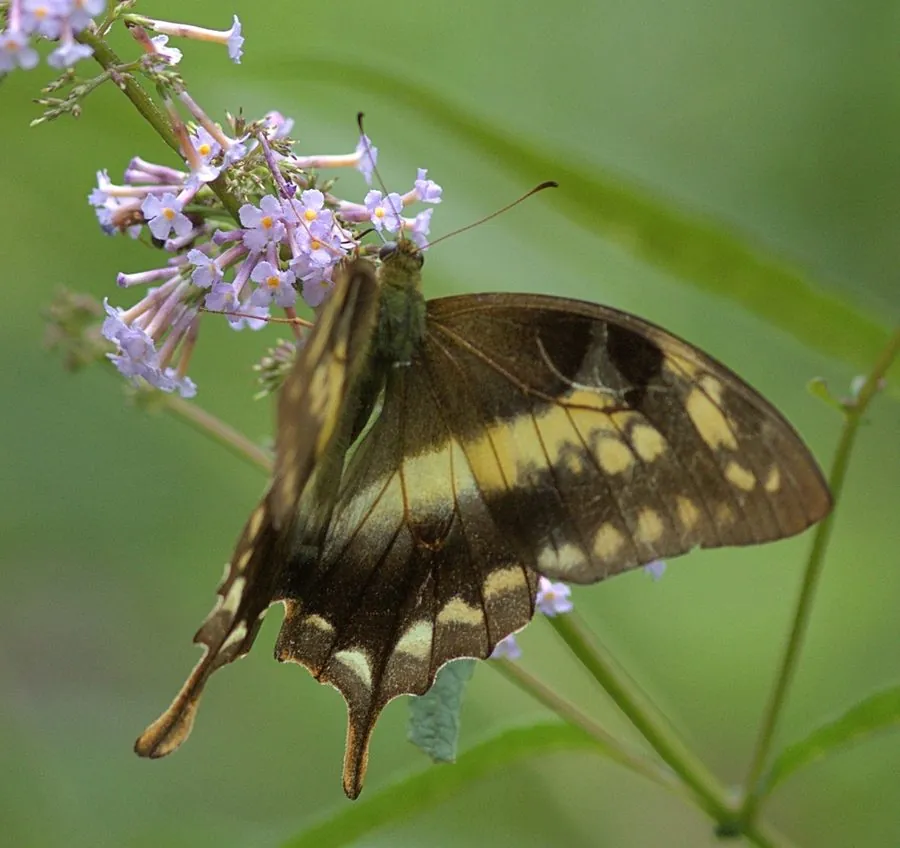

昆虫 · 动物界
褐钩凤蝶 Meandrusa sciron

翅面褐色、后翅拖出钩状长尾突的凤蝶，栖息于中国南方与喜马拉雅的山地森林，幼虫取食樟科植物。
- 分类
- 门节肢动物门纲昆虫纲目鳞翅目科凤蝶科属钩凤蝶属
- 栖息环境
- 海拔数百米至两千五百米的山地常绿阔叶林、林缘和溪谷
- 地理分布
- 中国南方与西南（云南、四川、贵州、广西、海南），以及印度北部、尼泊尔、不丹和缅甸
- 保护级别
- 尚无专门保护级别；常绿阔叶林砍伐是主要威胁
物种志
褐钩凤蝶的翅展约八至十厘米，翅面褐色至深褐色，前翅有一条淡色的斜带自前缘伸向后缘，后翅反面有淡色的云状斑和一条橙黄色的内缘带，后翅末端拖出一条细长而末端上弯的尾突，形状像一枚钩子，钩凤蝶之名由此而来。它的身体褐色，胸部有细毛，触角细长，雌蝶翅面较宽，尾突也更长。
它分布于中国南方和西南，包括云南、四川、贵州、广西和海南，以及印度北部、尼泊尔、不丹和缅甸，栖息在海拔数百米至两千五百米的山地常绿阔叶林、林缘和溪谷，成虫飞行迅速，常在树冠层和溪边活动，喜在湿沙上吸水。幼虫以樟科植物为食，尤其喜欢木姜子属，卵产在寄主的叶片上，幼虫取食叶片，化蛹于枝条上，一年发生一至两代。它尚无专门保护级别，原始常绿阔叶林的砍伐是主要威胁。
形态与习性
- 翅展约八至十厘米，翅面褐色
- 前翅有一条淡色斜带自前缘伸向后缘
- 尾突细长而末端上弯，形如钩子
- 食性幼虫取食樟科木姜子属植物
- 栖息山地常绿阔叶林与溪谷，常在湿沙吸水
- 发生世代一年一至两代
趣味知识
- 它的尾突末端向上弯成钩状，是凤蝶里少见的造型。
- 成虫爱在溪边湿沙上吸水，一群聚在一起时很难被惊动。
- 幼虫只认樟科的木姜子，林子一被砍，它也就没了去处。